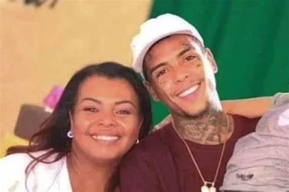

Mc Kevin faleceu no dia 16 de maio de 2021 no Hospital Municipal Miguel Couto no Rio de Janeiro. Kevin caiu da varanda do quinto andar de um prédio, localizado na Barra da Tijuca. Após meses investigando, a polícia confirmou que foi um acidente. Kevin estava sobre efeito de drogas e alcool, e estava acompanhado de amigos e uma garota de programa.
Aparentemente Kevin havia recebido a notícia que a noiva estava procurando ele, Kevin tentou se esconder na sacada do hotel, ultrapassando o guarda-corpo da varanda, o que causou sua morte. Até hoje, o caso não foi totalmente resolvido, pois ainda há outras teorias de como tudo aconteceu. Inclusive a mãe do cantor chegou a pedir para reabrirem o caso.
O Sepultamento ocorreu no Cemitério Parque dos Pinheiros, no dia 18 de maio de 2021 em São Paulo.
Deolane, esposa de Kevin, comentou que a morte dele foi causada por más influencias de amigos. Sabemos que foi um acidente fatal que poderia ter sido evitado. Mc VK, que estava envolvido pois estava junto no quarto com o mc e a acompanhante, disse que não sabia de nada, não viu o que aconteceu, e se sentiu aliviado após arquivarem o caso. Valquíria Nascimento, mãe do mc diz que até hoje espera explicaçoes.
